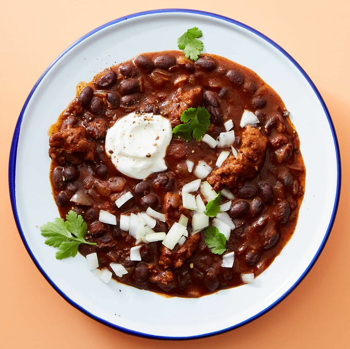

Chorizo Black Bean Chili

Description
A rich chorizo and black bean chili, topped with sour cream, cilantro,
and freshly chopped onions.
Ingredients
- 1 yellow onion
- 2 cloves garlic
- 1/2lb chorizo sausage
- 15oz can of black beans
- 8oz can of tomato sauce
- Fresh cilantro
- Sour cream
- Neutral oil
Steps
- Finely chop onion and garlic.
- In a medium pot, heat 1 tablespoon of oil over medium-high heat.
Add chorizo and cook, breaking up into smaller pieces, until mostly
browned.
- Add chopped garlic and half of the chopped onions to the pot.
Reduce heat to medium, cooking until onions are softened.
- Add the beans (do not drain), tomato sauce, 1 1/2 cups of water,
a teaspoon of salt, and 1/2 teaspoon of pepper. Bring to a boil and
reduce to a simmer. Stir occasionally. While chili simmers, finely
chop the cilantro.
- Remove from heat once thickened to a stew-like consistency.
Ladle into bowls and top with sour cream, cilantro, and the remaining
chopped onions. Serve and enjoy!